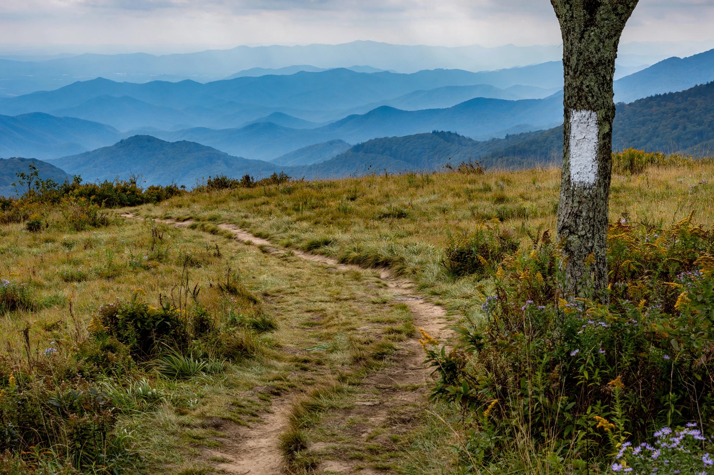

[Image placeholder: The Appalachian Trail crossing a bald in the southern Appalachians]The **Appalachian Trail** (the A.T.) is a hiking trail in the eastern United States extending between Springer Mountain in Georgia and Mount Katahdin in Maine. Conceived by forester Benton MacKaye in 1921 and completed in 1937, it is roughly 3,540 km (2,200 miles) long — the exact length changes slightly with reroutes — and passes through 14 states.
The trail is maintained by the Appalachian Trail Conservancy and dozens of volunteer clubs. Each year thousands attempt a 'thru-hike' of the whole trail, typically taking five to seven months; a few hundred succeed. The A.T. is one of the US National Scenic Trails and, with Spain's pilgrimage routes and others, inspired a worldwide network of long-distance paths.
From Georgia the trail crosses North Carolina (Great Smoky Mountains), Tennessee, Virginia (the longest share, including Shenandoah National Park), West Virginia (Harpers Ferry, the psychological halfway point), Maryland, Pennsylvania (notorious for rocks), New Jersey, New York, Connecticut, Massachusetts, Vermont, New Hampshire (the White Mountains) and Maine, finishing at Katahdin in Baxter State Park.
Thru-hikers acquire 'trail names' and rely on 'trail magic' from volunteers. Famous accounts include Bill Bryson's A Walk in the Woods (1998). Challenges include Lyme disease, norovirus in shelters, black bears, and rapidly changing mountain weather.